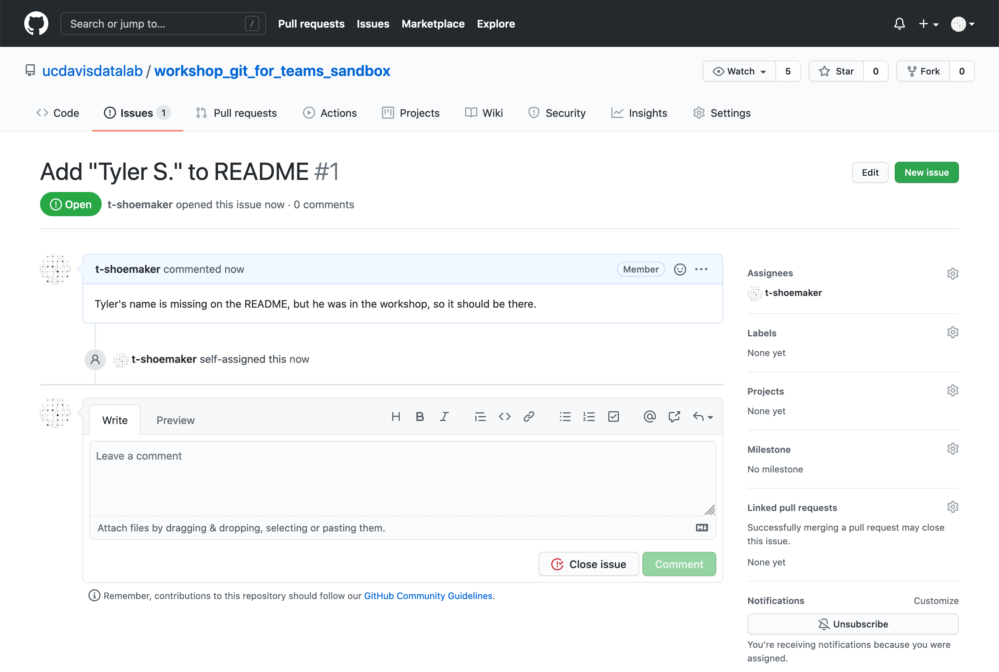
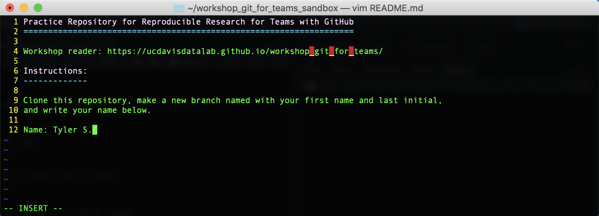
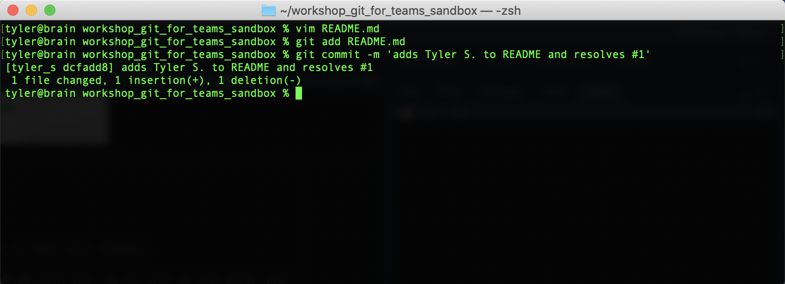
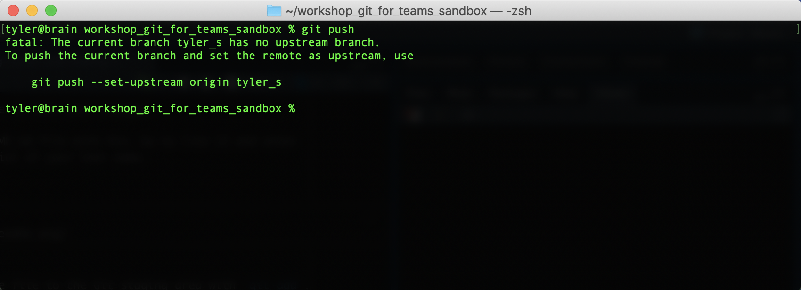
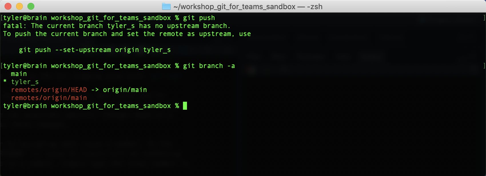
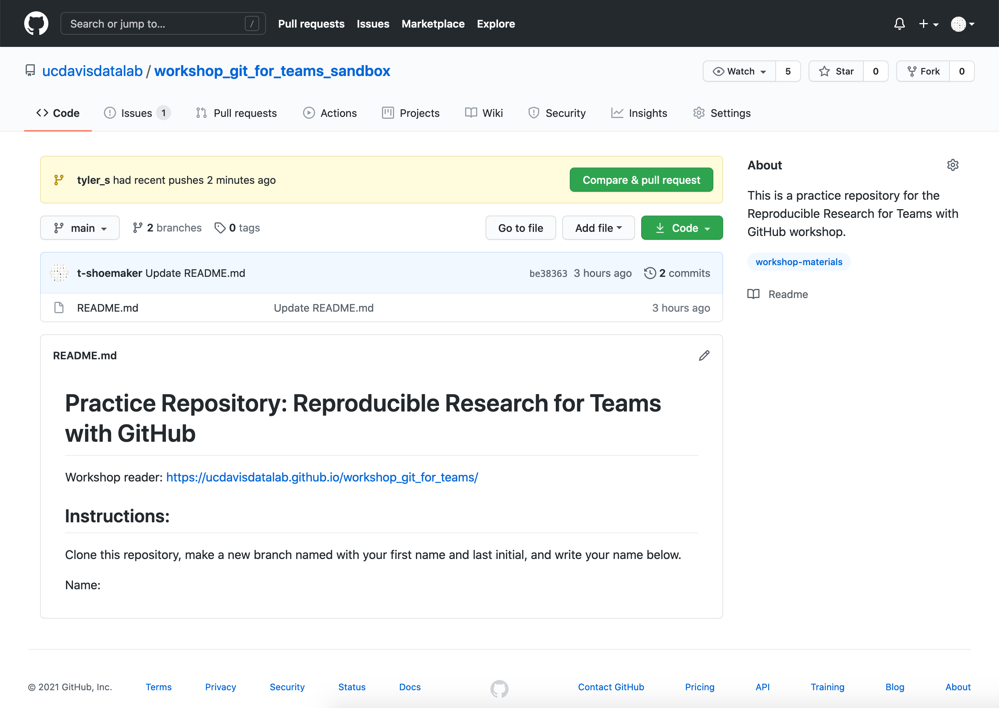
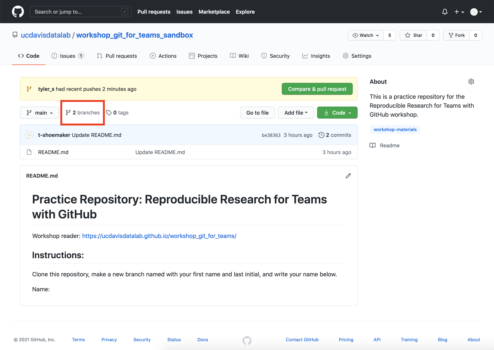
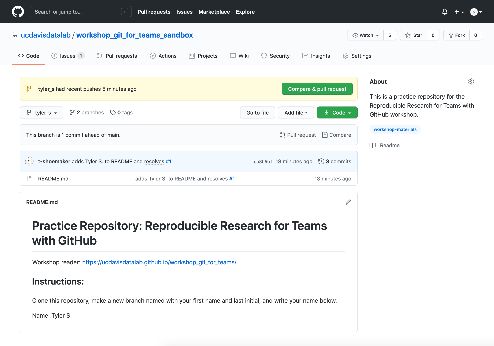

6 Opening Issues and Making Changes
You’ve made a branch! It’s now possible to make changes to the cloned repository without stepping on the toes of your team members. However, it would be helpful to communicate with your team and tell them what you’re working on.
6.1 About Issues
On GitHub, one of the primary ways we do this is through Issues. Issues are the basic unit of project management on GitHub: they’re used for reporting bugs, keeping track of tasks, and requesting project enhancements. Scope is important for issues: an issue should address a specific bug or a discrete task, which a team member can then work on. Examples might include:
- add an “About Us” button to a website navigation bar
- following a recent directory restructure, filepaths need to be rewritten
- fix the encodings of a source file
- update README to include new information about recent changes
Issues contain the following parts:
- A title: a brief summary of the task, bug, or request
- A description: space for additional information about the task, bug, or request
- Assignees: information about which team member is working on the issue
- Labels: projects might ask team members to specify an issue type with a tag (e.g. “bug”, “enhancement”)
- Milestones: teams can set larger goals for a project, of which a given issue might be a part
- Comments: space where team members can discuss issues
Typically, a team member will open an issue, enter the above information, and begin working on whatever task that issue requires. When they’re finished, the team member will close the issue, which lets others know that that task has been completed.
You can read more about GitHub issues here.
6.2 Opening an Issue
Before we make any changes to our cloned repository, let’s open an issue. Go to the “Issues” tab at https://github.com/ucdavis-datalab-training/workshop_git_for_teams_sandbox and click the green “New issue” button. It should take you to the following page:

You’ll be adding your name to the repository’s README.md file. Your issue’s title should reflect this task.

With this information entered, assign yourself to this issue (by clicking the little gear button next to “Assignees”). Then, click the green “Submit new issue” button. GitHub will take you to a new page:

6.3 Making Changes
With your issue open, it’s now time to make your changes.
In the command line, open the README.md file with Vim. Go to line 12 and enter your first name and the first initial of your last name.

Save the file and quit Vim. Add the file to the Git staging area with git add.
From here, you can commit the file as you normally would. But since you’re working on a specific issue, it would be helpful to reference that issue in your commit message. That way, your team can associate specific changes made to a project with the issues that discuss those changes.
GitHub makes tracking issues easier by assigning each issue a number. In the example above, “Add ‘Tyler S.’ to README” is issue #1 (yours will be something different). To reference this issue in a commit, simply type the issue number in the commit message:

6.4 Pushing Changes on a Branch
To see how GitHub makes reference to this commit, we’ll need to push our changes.
But if you try git push from here, you’ll get the following error message:

Here, Git is telling you that the remote repository doesn’t have a branch to
associate your changes with; you’ve made a local branch, but that doesn’t
automatically create a remote branch. We can see what branches are
available on the remote repository with git branch -a:

The text in green lists local branches, while the red text lists remote branches. The “->” arrow that points from a red remote with a green local tells you which remote branch your own main branch is synced with.
From this list, you can see that the remote repository doesn’t have your branch. You’ll need to push it.
To do so, type the following into your command line:
git push --set-upstream origin <branch-name>There’s also a bit of shorthand for this command:
git push -u origin <branch-name>(Note: here “origin” references your local repository.)
Once you press “Enter”, you should see something like this:

Now, if you type git branch -a, you’ll see a remote copy of your branch. You
can also visit the repository page on GitHub, where you’ll see a notice that a
branch has “recent pushes”.

Click on the “branches” icon:

…and you’ll see a list of branches.
If you click on yours, you’ll see that this branch is “ahead” of the main branch by 1 commit. You’ll also see that your change has appeared down in the README view. Finally, you’ll see in the commit message view that the message has turned your issue number into a hyperlink.
